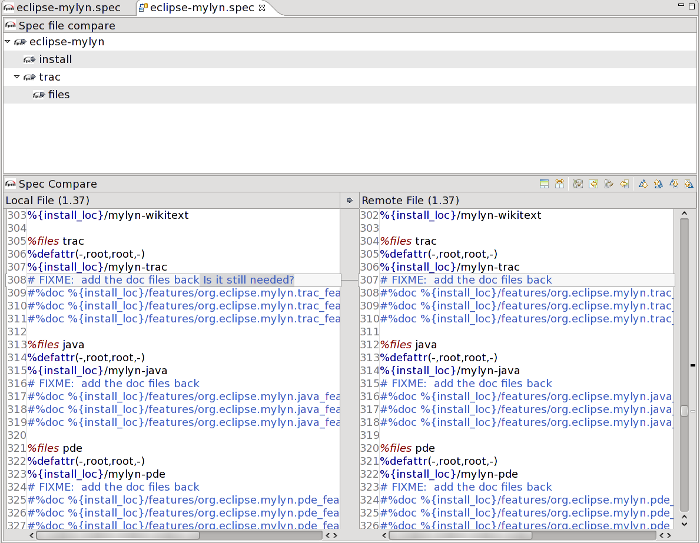
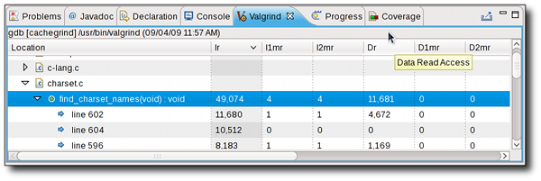

|
Configuration
|
The Autotools integration plugins add support for
running a configuration step prior to running the Makefile of existing
projects that use a configure or autogen.sh script.

|
|
|
Maintenance
|
The Autotools plugins include colourized editors
for configure scripts including hover help and completion for macros.

|
|
|
Project Templates
|
The GNU Autotools plug-in provides template
projects for both C and C++ in the CDT C and C++ Project Wizards.
There are two templates for each language: an empty project template
used when importing existing projects and a sample "Hello World"
project template. The "Hello World" sample project templates provide
all needed source and configuration files such that the build produces
a working executable that prints to the console.
 |
|
|
Autotools Configuration
|
The configuration settings can be found under the
Autotools properties page. Configuration options write and store a new
project xml file: .autotools. Note that the build directory is not specified in
the configuration settings, it is specified exclusively using the
"Build Location" setting found in the C/C++ Build properties page.

If the build location is not set, then by default,
the initial build will occur in the top-level project directory.
Subsequent builds will build in new directories which are named
"build-${CfgName}" where ${CfgName} is the name of the configuration.
If this behaviour is not desired, it can be turned off from the
top-level Autotools property page.

For further information about rewrite changes, click
here.
|
|
|
Source code parsing
|
The ChangeLog tools assist in generating ChangeLog
entries. Pressing the key combination Ctrl-Alt-c will parse the
current file and add a ChangeLog entry in the appropriate ChangeLog
file. C, C++, and Java source files are parsed to indicate
methods/functions which have been modified, added or removed. Hold Ctrl
and click on one of the files to jump to that file in the Editor.

|
|
|
Repository integration
|
The ChangeLog tools can generate a ChangeLog entry
for projects that use a source code repository. Support is provided
for standard org.eclipse.team providers and has been tested with both
CVS and SVN repositories. A ChangeLog entry can be generated for all
changes between the local copy and the repository by pressing
Ctrl+Alt+p.

|
|
|
Filename Support Improvements
|
Previously files with blanks in their names or
parentheses or colons caused the ChangeLog parser to misinterpret the
actual file name vs the function name. This would prevent a Ctrl-click
from opening files properly. This is now fixed and files with such
names will show up with escape characters automatically added.
Ctrl-click now works on these files.
 |
|
|
Multiple files per entry
|
The plugin now allows entries that have multiple
files specified in one entry. The multiple file names are separated by
commas and can continue on multiple lines. This is useful when there
is one change made on a large group of files. The Ctrl-click feature
works on each file.
 |
|
|
Manual Profiling
|
The Manual Profiling option makes your profiling
more controlled and more precise. Use the Manual option to start and
stop the Oprofile daemon at will.
 |
|
|
Eclipse Help User Guide
|
The OProfile
user guide is available via a link in the Eclipse Help System.
 |
|
|
Timer Interrupt Profiling
|
The plugin will now work with OProfile's timer
interrupt-based profiling. This happens automatically when the host
CPU has no debug registers, or can be forced by manually loading the
OProfile module with: # modprobe oprofile timer=1
 |
|
|
Multi-Architecture Support
|
The plugin includes fragments to support PPC, x86 and x86_64 for
use with their respective processors.
|
|
|
New View
|
The OProfile plugin gives users a way to
statistically profile a C/C++ application at runtime. It makes use of
the OProfile commandline tool to collect data on function calls and
time spent within functions. The plugin includes a way to view the
results of oprofile runs. Events are top level elements allowing
multiple events to be shown simultaneously. Double-clicking on a line
number node brings up an editor with the source file at the
appropriate line (if available). Double-clicking on the default
session (named "current") allows it to be saved for future viewing.

|
|
|
One Click Launch
|
Profiling is as easy as a single click.
Right-clicking on a CDT binary, project or editor of a source file
will launch the associated project's binary under OProfile with no
configuration needed. Configuration is set to appropriate defaults for
the user's processor (an event based on execution time) and this
configuration is left for the user to customize later.

|
|
|
Event Config Tab UI
|
Allows users of all experience levels with
OProfile to take advantage of its powerful profiling capabilities.
Default event configuration option. Multiple hardware counters appear
as tabs. All unit masks properly displayed with appropriate defaults.
Caching of event check results allowing for faster validation.
Scrollable composite for events with many unit masks.

|
|
|
Multi-threaded profiling
|
Callgraph can now trace function calls in
multi-threaded programs. No difference in terms of the user interface,
but now when graphing Callgraph will automatically track which
functions belong to which thread and display them accordingly.
 |
|
|
Convert To DOT Language
|
Eclipse Callgraph can save graphs to the DOT
language. In Eclipse Callgraph, click the main menu and choose File ->
Save As, then choose an option to save parts of the graph or the whole
graph as a .dot file. Graphs in DOT language can then be graphed or
converted to other formats (e.g. PDF, SVG, etc.) by any of a large
number of existing DOT parsing programs.
 |
|
|
Visualize C/C++ Projects
|
Graphically displays the call hierarchy from
executing a C/C++ binary, along with various other runtime statistics.
 |
|
|
Link To Function Source
|
The graph views are linked to their source code.
This means that from any view, one can jump directly to the relevant
source code by holding Ctrl and double clicking a node.
 |
|
|
Download sources
|
Sometimes when working with an RPM spec file it is
necessary to download any referenced sources. The RPM .spec editor
makes this easy by allowing sources defined in the spec file to be
downloaded directly from inside Eclipse.
 |
|
|
SRPM Import
|
SRPM import wizard creates RPM project directly
instead of running the generic new project.
 |
|
|
Form based editor
|
The editor has a form-based editor that supports a
number of sections and tags.
 |
|
|
Convert tabs to spaces
|
Automatically replace tabs with a predefined
number of spaces using a preference setting.
 |
|
|
RPM project support
|
The editor includes a wizard that creates RPM
projects with standard rpmbuild directory structure to facilitate
setting up RPM projects.
 |
|
|
Rpmlint markers for .spec files
|
The RPM .spec editor comes with an option to run
RPMLint on spec files. The RPMLint option will run the rpmlint tool and
mark warnings/errors on the spec file.
 |
|
|
Structured compare support
|
Structured compare has been added for ease of use
with version control systems.
 |
|
|
%global definition support
|
Support for %global way of defining variables. For
details about why %global should be preferred over %define see here.
 |
|
|
Fully-featured editor
|
The RPM .spec editor is a fully featured editor
for spec files. It includes context-sensitive autocompletion support,
syntax highlighting, quick fixes, hover-help and other features
designed to make editing spec files easier.
|
|
|
Valgrind 3.5 Support
|
Valgrind 3.5 brings several changes
to the tool suite, such as improved leak checking. For the Linux Tools
0.4 release, an issue has been corrected that prevented launching a
program successfully with default Valgrind options. Valgrind 3.5 users
should now have no problems profiling their C/C++ applications in
Eclipse.
|
|
|
Customize Valgrind Location
|
A new preference setting specifies an alternate
location for the Valgrind executable. Now you can use Valgrind from a
non-standard location without having to manipulate your PATH
environment variable! By default this will be set to the path returned
by the which command. The preference page can be found in Window
-> Preferences .
 |
|
|
Suppression File Editor
|
For Valgrind tools that output a series of errors,
there can often be a lot of noise — errors you are not
interested in. Valgrind has the capability of using Suppressions to
ignore such errors. The syntax for defining Suppression Files can be
found here.
Now an editor for Valgrind Suppression files has
been created and will be used for files ending with the ".supp"
extension. It features context-sensitive syntax highlighting (for
instance only highlighting the word "Memcheck" when used to define the
tool relating to the Suppression), code folding and completion.
Completion is very useful to select from the full range of Memcheck
Suppression types.
Currently only Memcheck is supported in the editor
as it is the only tool of these plugins that uses Suppressions.
 |
|
|
Export Massif Chart
|
The allocation chart produced by the Massif plugin
can now be exported as an SVG.
 |
|
Massif Chart Interactivity
|
A new interactivity feature has been added to
Massif's heap allocation charts. As before, single-clicking on a data
point in the chart selects that snapshot in the Valgrind view. Now you
can double-click on a data point that is a detailed snapshot to open an
editor for one of its allocation function calls. This feature considers
all of the locations in your project's sources that call an allocation
function such as malloc or new. If your project contains functions that
serve as wrappers to allocation functions, be sure to add them to the
list of allocation functions in the launch configuration. This will
ensure you get the most meaningful profiling results.
 |
|
|
Fold Valgrind results
|
To help manage large amounts of profiling results,
all three tools offer a new "Expand/Collapse Beneath Selection"
feature in their tree viewers. Accessible from the viewer's context
menu, this will expand (or collapse) all items beneath the selected
element.
 |
|
|
Cachegrind Integration
|
A Cachegrind plugin allows users to profile the
cache and branch behaviour of their program. A hierarchical breakdown
of these statistics is presented in a tree for easy navigation and
sorting.
 |
|
|
Memcheck Integration
|
Support for Memcheck, the memory error-checking
tool, includes a tree view of errors and their corresponding stack
trace. Stack frames can be double-clicked to show the given line in an
editor. Markers annotate the corresponding source code.

|
|
|
Massif Integration
|
Massif integration consists of three different
forms of output. A table view lists each heap snapshot taken. Of these
snapshots, some have more detailed information available, including a
call trace of the functions performing heap allocations in each
snapshot. This extended information is available in a tree view
accessible either by double clicking on a snapshot with the "tree"
icon, or by clicking the similar icon in the Valgrind view's toolbar.
Within the tree view, allocation functions found in source files can
be viewed in an editor by double clicking on the element in the tree.
Finally, there is a heap chart displayed in an editor that graphically
outlines the information provided in the snapshots. Clicking on a
point in the chart selects the snapshot in the table.

|
|
|
SystemTap Dashboard
|
The Dashboard Perspective is the most advanced
part of SystemTap GUI. It is designed to allow users to browse and run
prebuilt modules in order to see multiple graphs updating in
sequence.The dashboard allows for visualizing specific system
activities graphically.

SystemTap dashboard
|
|
|
Removed server dependency
|
The SystemTap GUI server is now redundant.
SystemTap scripts can be executed remotely using remote ssh.
|
|
|
SystemTap IDE
|
Linux Tools encompasses a fully-featured IDE for
the SystemTap language. This includes a SystemTap editor and views
that list available systemtap probes, systemtap functions and the
kernel source code. Code completion, code folding, context-assistance
and highlighting are all included in the IDE.
 |
|
|
SystemTap Graphs
|
The SystemTap IDE is can display the output of
SystemTap scripts as dynamic graphs. Graphs are created on-the-fly and
according to user specifications.
 |
|